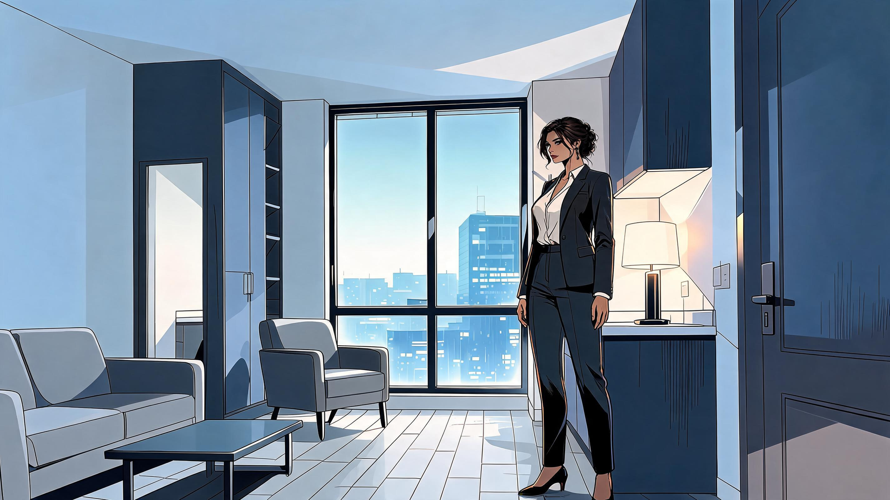
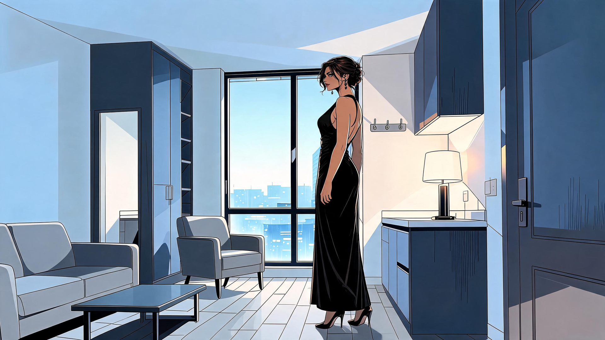
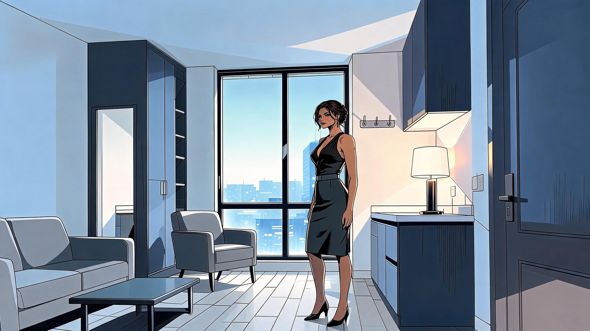
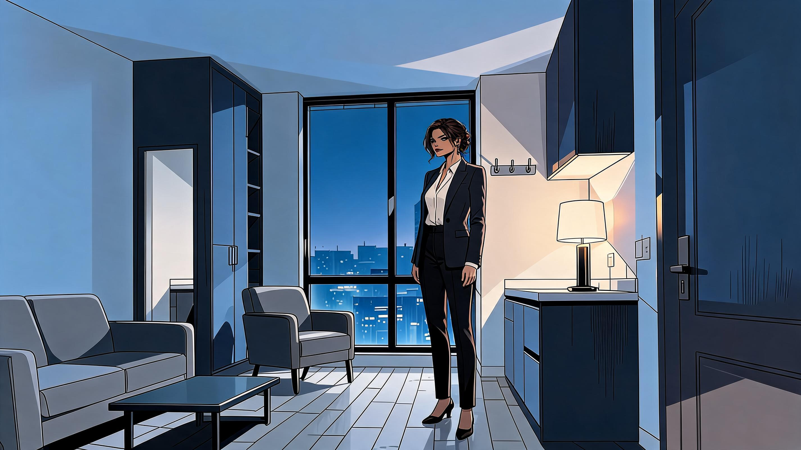
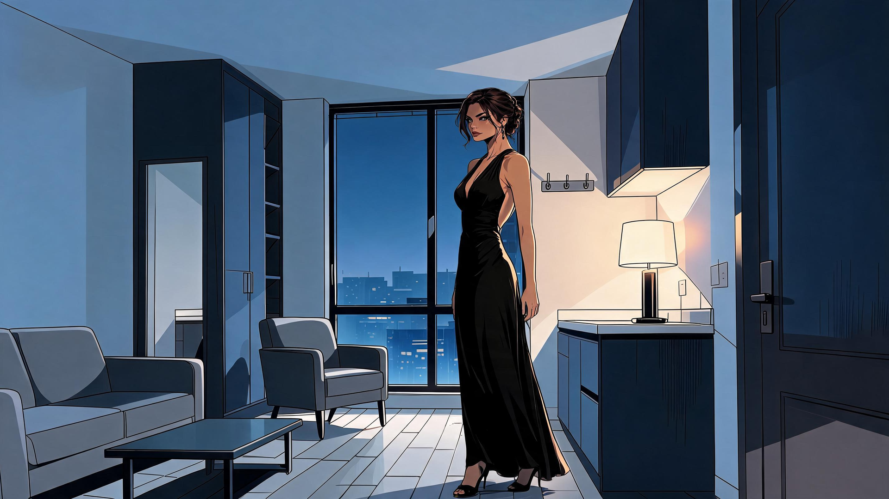
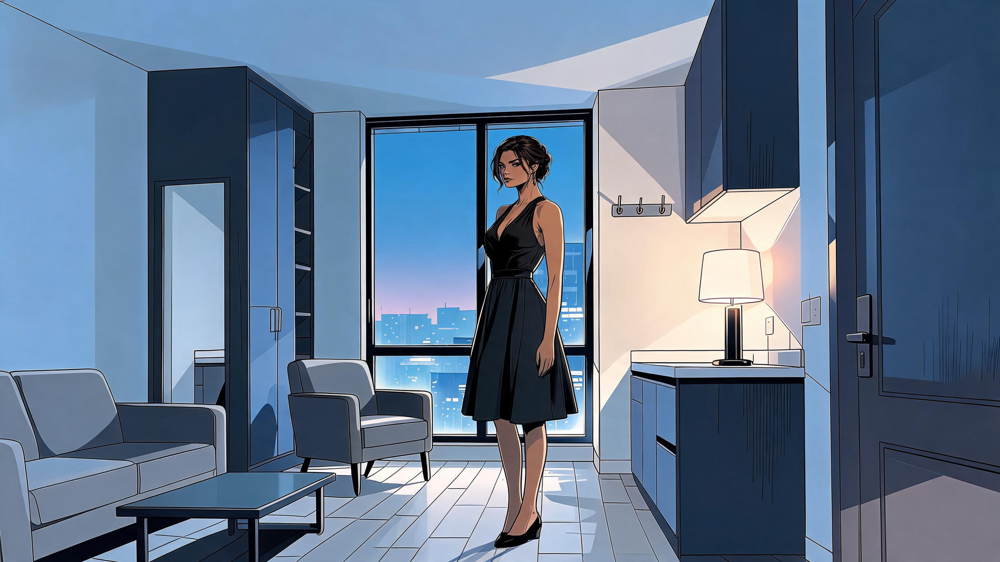

Evelynn · three home outfits
Six actual 1920 × 1080 PNGs: executive suit, socialite gown and shadow/plain dress, before and after Glass House. Generated for 6 credits using the owner-accepted background. No new character image is automatically approved.
Before Glass House · executive

REVISE · generated / pending owner review
- Correct tailored suit and recognizable Evelynn; accepted room retained.
- Right shoe is clipped by the lower frame and the figure is larger than the post-return suit version; standardize framing before production.
Before Glass House · socialite

REVISE · generated / pending owner review
- Correct long black gown, recognizable face and accepted room.
- Figure appears taller than the other outfit variants, with head above the window; align scale. Closed pumps differ from post-return sandals.
Before Glass House · shadow

REVISE · generated / pending owner review
- Correct short charcoal dress category, recognizable Evelynn, grounded feet and retained apartment.
- The narrow fitted skirt and prominent buckle differ from the post-return flared skirt and narrow belt; unify the exact garment before production.
After Glass House · executive

PASS · generated / pending owner review
- Tailored suit, recognizable face and full figure; no duplicate outfit or reaching artifact.
- Accepted apartment remains recognizable with darker late-evening exterior. Ready for owner review; no promotion.
After Glass House · socialite

REVISE · generated / pending owner review
- Correct long black gown and recognizable Evelynn; late-evening apartment retained.
- Open-toe shoes differ from the pre-departure pumps and figure scale differs across the set; align before production.
After Glass House · shadow

REVISE · generated / pending owner review
- Correct short plain dress category, recognizable Evelynn and accepted room; all limbs and feet visible.
- Flared skirt and narrow belt differ from pre-departure fitted skirt and buckle. Match the same dress before production.